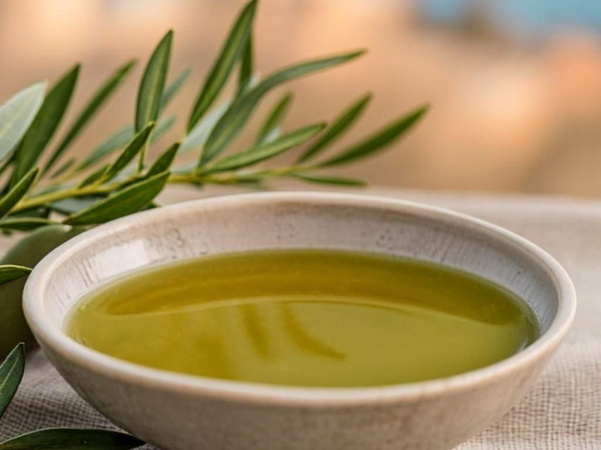
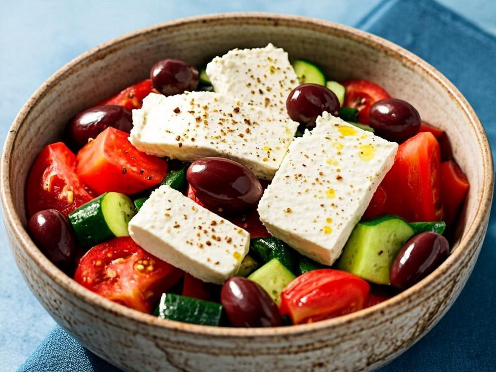
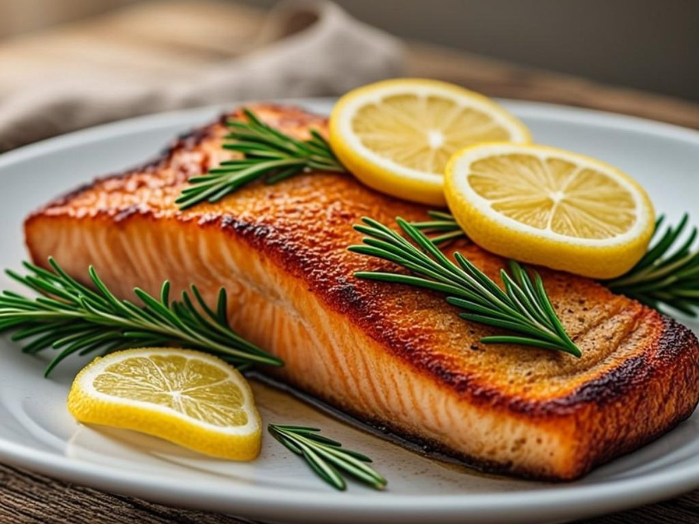

MEDITERRANEAN · 7-DAY TABLE
olive.
7 天地中海饮食 · 全球第一的长寿吃法
The Mediterranean Diet — an eating pattern, not a diet plan
N°1
为什么说它是全球第一
它不是减肥食谱，而是一整套「怎么吃」的生活方式——以植物性食物为底，好油担当主角，糖和深加工食品退到幕后。医学界对它的好感来自几十年、几十万人的队列研究，和一场改写指南的随机对照试验。


N°3
7 天餐桌直接抄作业
点开每一天 · 吃过就点右侧圆圈点亮 · 7/7 有一份小毕业礼
N°5
真实出处
榜单背书：U.S. News & World Report「最佳饮食」年度评选——地中海饮食连续 7 年位居综合榜第一。
科学背书：PREDIMED 随机对照试验（New England Journal of Medicine）——地中海饮食+橄榄油/坚果组心血管事件风险显著下降约 30%。
7 天菜单：整理自 U.S. News 榜单配套示例菜单（约 1800 kcal 版本），并结合中文家庭厨房做了可读化转写；灵感原帖来自小红书《7 天地中海饮食，全球第一的长寿吃法》。
小提醒：本页为生活方式分享，非医疗建议；有慢性病或特殊体质，请先与医生聊聊再开始。